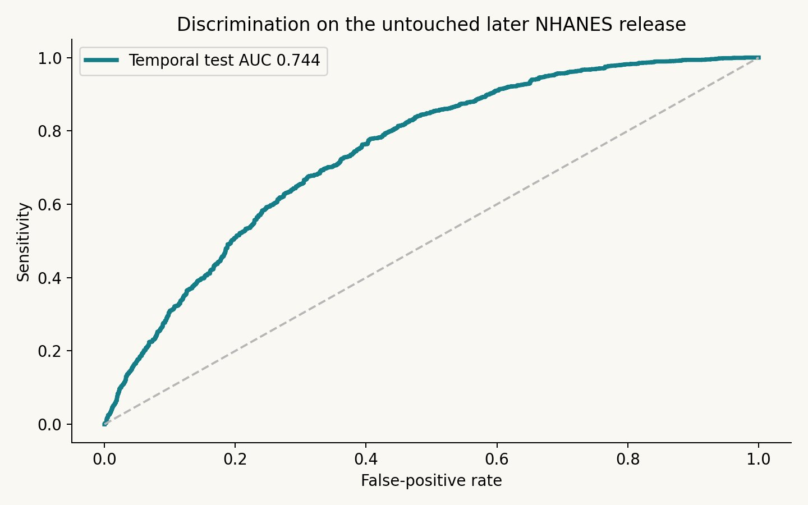

HEALTH DATA SCIENCE · NHANES · TEMPORAL VALIDATION
Can everyday measurements help identify elevated HbA1c?
A survey-aware screening workflow using age, recorded sex, BMI and waist circumference. Developed on 2015–2016 NHANES and tested on a separate 2017–March 2020 release.
A precise screening problem
The outcome is HbA1c ≥5.7% at examination among U.S. adults aged 20+ without reported diabetes or diabetes-medication use. This is screening for current elevated HbA1c, not prediction of incident diabetes or a diagnosis.
Complexity had to earn its place
Four prespecified models competed using group cross-validation on development survey PSUs. Logistic regression outperformed spline logistic regression, random forest and gradient boosting. A separate calibration partition fixed a sigmoid calibrator and a threshold before the later release was evaluated.
Imputation and scaling were fitted inside training folds. HbA1c, glucose, diagnoses and treatment fields never entered the predictor matrix.
Validation across a later survey release

Weighted AUC 0.744, conditional 95% stratified PSU bootstrap interval 0.721–0.763. Weighted Brier score 0.171 versus 0.197 for a development-prevalence constant baseline.
Detection has an operational cost
At the development-selected 22.3% threshold, sensitivity was 80.9%, specificity 55.3%, positive predictive value 40.2% and the screen-positive fraction 54.5%. More detection means more people sent for confirmatory laboratory assessment; clinical utility has not been demonstrated.
Calibration deserves equal attention

High predicted probabilities overestimated observed elevated-HbA1c proportions in the temporal test. Sigmoid calibration did not improve temporal Brier score over the uncalibrated model. This limitation is retained rather than hidden or corrected retrospectively against the test data.
Transparent inputs and subgroup scrutiny

Permutation importance describes predictive reliance, not causality. BMI and waist are correlated. Sex, age and race/ethnicity subgroup audits are descriptive, small outcome cells are suppressed, and race/ethnicity is not a model input.
What this work does—and what remains unproven
The project provides reproducible official-data retrieval, validated cohort joins, leakage controls, survey-weighted model evaluation, uncertainty, missingness and sensitivity analyses, model artifacts and an interactive research application. It does not establish clinical effectiveness, future disease prediction or applicability to Nigeria. Laboratory nonresponse has not been separately reweighted and bootstrap intervals condition on a frozen model.
Reproduce the evidence
Run the download script, pinned Python environment, pipeline and six evidence/application tests. The accompanying source package contains all code, official source files with checksums, aggregate tables, figures and documentation.